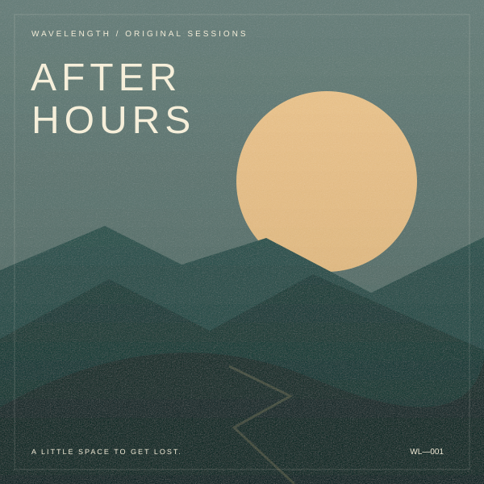

TUNE IN. SLOW DOWN.
Find your frequency.
THE EVENING EDIT
After hours
Soft beats. Open roads. No rush.
A little space to get lost in the sound.

WL / 001 — ORIGINAL SESSIONSThe rotation
Good music. On repeat.
#TITLECOLLECTIONActions
A little quiet in here
Try a different search or add a song of your own.